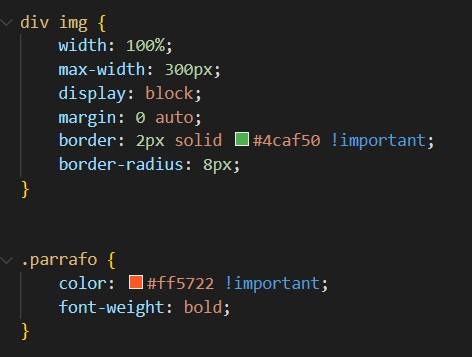

¿Qué es la herencia en CSS?
La herencia permite que algunos estilos, como colores y fuentes, se transmitan de los elementos padres a los hijos de forma automática.
Ejemplo de clase
En esta imagen podemos ver que !Important crea prioridad para cada elemento HTML, sobre una clase o id. En caso de la doble existencia de este, se priorizará al que conlleve clase o id, siendo id más fuerte que clase.

Este párrafo tiene un estilo específico que usa la regla important.